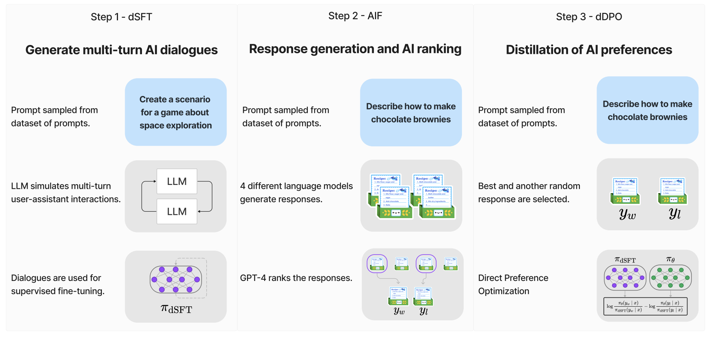

The Evolution of Small Language Models: Aligning to the Intent of the user with Zephyr
Technological advancements in natural language models have been remarkable, culminating in large and robust systems capable of a variety of tasks. While large proprietary models are at the forefront of this evolution, smaller open models are catching up, especially in their ability to align with human intent, a crucial aspect for user experience in conversational systems.
The Need for Intent Alignment
One of the key issues with these models is their lack of "intent alignment". In layman's terms, this means that these models don't always respond in the way humans would prefer. They may generate text that is grammatically correct but doesn't quite get to the heart of what the user is asking. There have been benchmarks like MT-Bench and AlpacaEval developed to specifically measure this characteristic. According to these, proprietary models tend to outperform their open counterparts, but the cost of human annotation to improve them is exorbitant.
The Distillation Method
Here's where distillation comes in. Distillation is essentially a "teaching" method where a smaller model (student) learns from a larger, more capable model (teacher). It's like learning shorthand notes from an expert's extensive lecture.
ZEPHYR - Direct Distillation Of LM Alignment
Zephyr1 aims to align with user intent throw three stages as below.

The Stages of Progress: From dSFT to dDPO
1. Distilled Supervised Fine-Tuning (dSFT)
The process begins with the Distilled Supervised Fine-Tuning (dSFT) stage. Here, the student model is trained to respond to user prompts. Traditional methods usually use a dataset comprising high-quality instructions and responses. However, this research proposes a novel twist: why not use the teacher model to generate these instructions and responses?
Let x₁, . . . , xⱼ be a set of seed prompts, constructed to represent a diverse set of topical domains. A dataset is constructed through iterative self-prompting where the teacher is used to both respond to an instruction and refine the instruction based on the response.
This method, also known as "distilled SFT," essentially involves having the teacher model guide the training of the student model.
2. AI Feedback through Preferences (AIF)
Usually, human feedback is used to further improve the alignment of these language models. However, the research introduces a twist—using AI-generated preferences for distillation.
For distillation, we instead use AI preferences from the teacher model on generated outputs from other models.
In this method, multiple models generate responses to a set of queries. These responses are then ranked by the teacher model, creating a new dataset. This dataset includes the best and a randomly chosen lower-scoring response, forming "triples" of data that guide the student model in recognizing more and less favorable outputs
3. Distilled Direct Preference Optimization (dDPO)
Refine the student model by optimizing throw a reward function that ranks the preferred response over lesser ones.
The goal of the final step is to refine the πdSFT by maximizing the likelihood of ranking the preferred Yw over Yl in a preference model.
The core idea is to implement a reward function, often denoted as rθ(x,y), that is influenced by the "teacher" model's preferences. This function forms the basis of a preference model that aims to rank a higher-scoring response over a lower-scoring one.
An Example
Below is a nice example2 showing Zephyr's(1) ability to keep track of complex scenarios
- Zephyr is like teaching a chatbot to talk smarter by first giving it basic lessons, then getting tips from a smarter chatbot, and finally polishing its answers to be top-notch.
I went to the market and bought 10 apples. I gave 2 apples to the neighbor and 2 to the repairman. I then went and bought 5 more apples and ate 1. I also gave 3 bananas to my brother. How many apples did I remain with?
After buying 10 apples, you gave away 2 apples to your neighbor and 2 apples to the repairman. This left you with a total of 6 apples. Then, you went back to the market and bought another 5 apples. You ate one of them, which left you with 4 more apples. In total, you now have 10 apples from your initial purchase (6 from the first time plus 4 from the second time).
Additionally, you gave away 3 bananas to your brother. Since we don't know how many bananas you had before giving them away, we can't include them in this calculation. However, let's assume that you didn't have any bananas before going to the market. In that case, you would now have a total of 10 apples and no bananas remaining.
To summarize, after all your transactions, you remain with a total of 10 apples but no bananas.
Conclusion
With the advent of methods like dDPO and models like ZEPHYR-7B, we're stepping into an era where small open language models can be as useful and aligned with human preferences as their larger, proprietary counterparts. It marks a democratization of technology where advanced conversational agents can be developed and deployed at a fraction of the cost. The future is not just about building bigger models but about making them smarter, aligned, and perhaps, more human-like.
-
Step back prompting: https://arxiv.org/abs/2310.16944 ↩